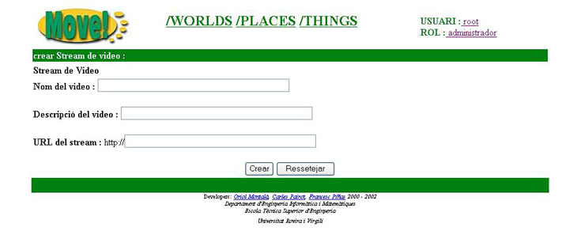

3.16.1 Crear Stream de video
Per tal de crear una Thing de tipus videoStream el que haurem de fer �s clicar sobre l'icona  que apareix en la barra de tools
actives i seguidament ens apareixer� la seg�ent pantalla:
que apareix en la barra de tools
actives i seguidament ens apareixer� la seg�ent pantalla:

Per a poder crear la Thing hem d'omplir els seg�ents camps:
- Nom del video: nom del video clip
- Descripci� del video: descripci� del video clip
- URL del stream: URL del stream del video
Un cop introduides les dades en el petit formulari ens cal pr�mer el bot�  per tal
que la nova Thing sigui creada i pujada al servidor del MOVE!.
per tal
que la nova Thing sigui creada i pujada al servidor del MOVE!.
Si tot ha anat b� serem redirigits a la pantalla on es mostra la llista de Things que hi ha en el Place, i observarem que la Thing que hem creat
ja apareix entre elles.